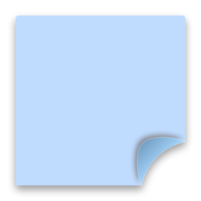
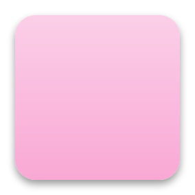
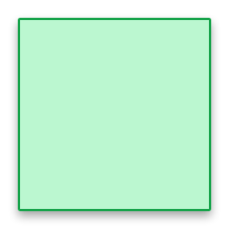
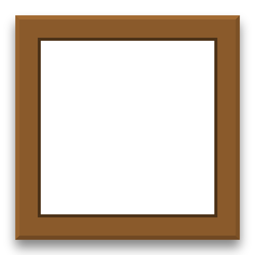
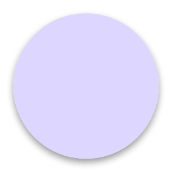
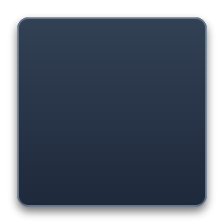

Widgets sueltos por tu escritorio.
Y si quieres, jerarquizables: enlázalos con cables como padres e hijos y contrae o expande las ramas.
Notas, imágenes, páginas web y botones que flotan sobre tus programas. Cambia de set con una tecla y déjalos a tu manera. Sin Python, sin administrador, un solo clic.
Descargar para Windows
SemanaEntregar el informe el jueves

Ideas para la portada
Pan de masa madre

Estudio

ExamenTema 4 y 5, martes a las 9:00


Descanso a las 11

LecturasCapítulo 7, resumen
Arrastra cualquier widget
Sets de widgets: